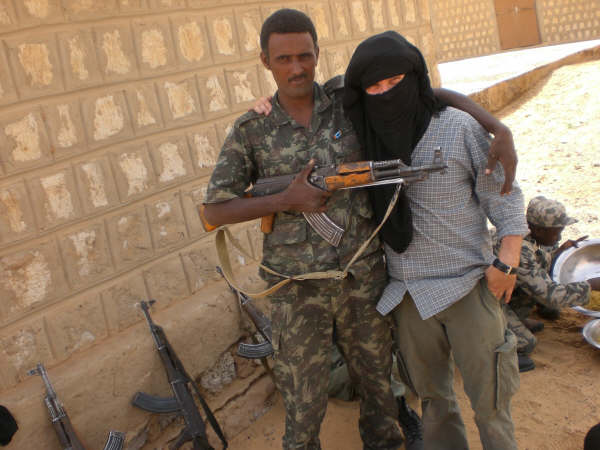
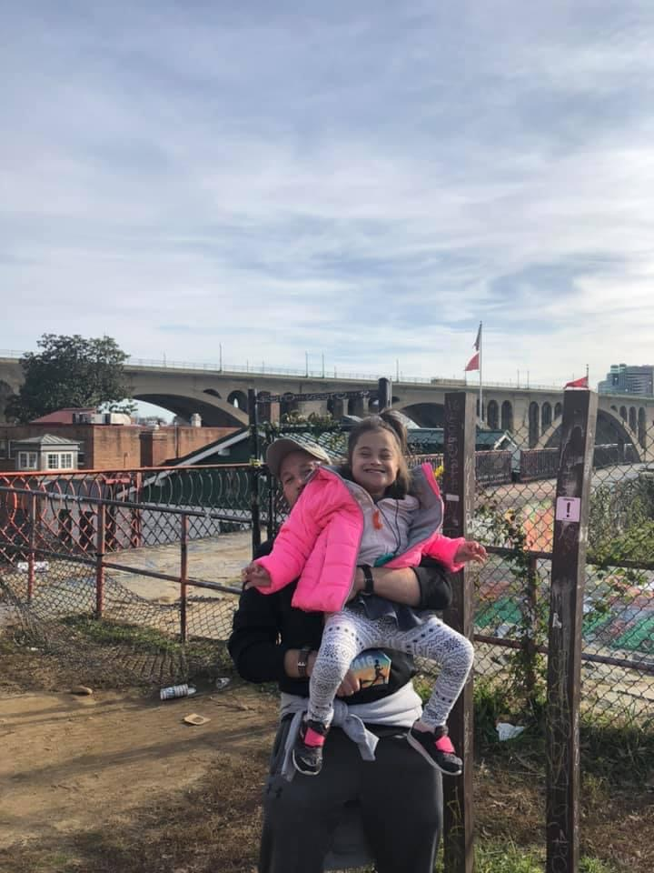

Jed is one of our emerging artists, having written his first published short story in November 2022, and since then publishing only two others before becoming one of the founding members of J3E Press. One of those stories, though, took third place in the 2026 High Caliber Awards, and his poetry has been seen a bit more widely.
Jed was in the Army from 1995 to 2020, deploying everywhere from Bosnia to the Central African Republic. Maybe Iraq a few too many times and Afghanistan, too. He retired as a Master Sergeant, specializing in Psychological Operations, having trained originally as a Russian linguist. Since then, he’s worked for the Pentagon in the Air Force Futures Office and the Defense Threat Reduction Agency as a contractor.
A Team Approach: PSYOP and LRA Defection in 2012
Oscar Wilde once said, paraphrasing, all bad poetry is sincere. Jed writes very sincere war poetry, with a side of sci-fi speculation and horror thrown in on top. He’s appeared in several Middle West collections and a few war poetry journals, and hopes one day to write something someone else feels more strongly than he does [this is probably a vain hope, but you never know…]. And most proudly, he’s once published in the Journal of the American Medical Association, DOI and all.
Hospital Beds
Jed is currently a doctoral student at George Mason University studying neurostimulation techniques & Artificial Intelligence under Prof. Craig McDonald.
Grad Student Page

Most proudly, Jed is the father of an amazing little girl, Meera, who takes all the oxygen out of the room. His wife, Ami, tolerates the Todds peculiarities, with the support of her dog, Veda. Reba, the Todd dog, is just happy to be here.
Further Info & Works